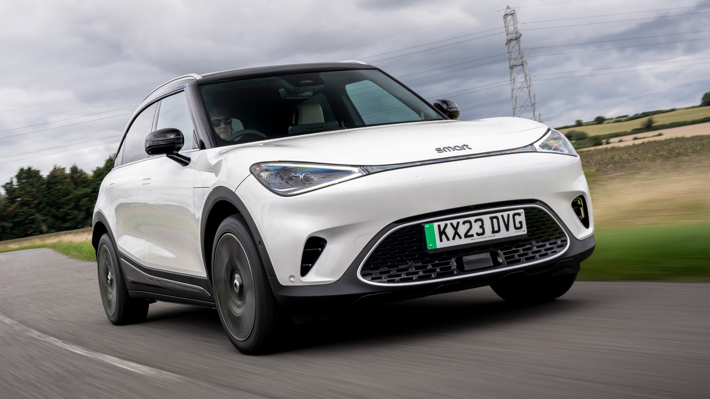

FEATURES OF CAR:
1.SELF DRIVING:
An autonomous vehicle is broadly defined as one equipped with technology that senses the conditions around it, including traffic, pedestrians, and physical hazards and can adjust its course and speed without a human at the controls. The terms “autonomous” and “self driving cars” are often used interchangeably.
However, as defined by the SAE, formerly known as the Society of Automotive Engineers, there are six levels of automated driving ranging from full control of a vehicle by a physical driver, assisted by advanced safety technology, to a vehicle that can operate without any on-board human input. Only that top level represents a driverless, or fully autonomous vehicle.
In this feature we’ll define the six levels of what the SAE terms “automated driving,” or AD, the pros and cons of self-driving vehicles, where they’re being used, effects on traffic and the environment and what the prospects are of private citizens being able to own a car that drives itself.
2.ARTIFICIAL INTELLIGENCE:
Artificial intelligence depends on the ability of computing units to replicate human learning. It begins with mimicry — and then as it analyses an increasing volume of data, a network of neurons will grow. It carries on developing this network until it is able to reproduce — or even surpass — human capacities for reflection. AI can then recognize elements in images, model data, synthesize information, predict trends, and show accurate results — all with a natural language.
History of artificial intelligence
In the 1940s, when computers were first being developed, many scientists like Alan Turing wanted to develop an “artificial brain.” These specialists conducted a variety of experiments to achieve their goal: creating a machine that is smarter than humans. To prove their goal, they came up with a well-known evaluation system: the Turing test.
Its principle is simple: for five minutes, a person sends computer messages to two strangers, a human, and a machine. At the end of the conversation, if the person cannot tell them apart, then the test is successful. AI proves that it has developed sufficient skills to reproduce natural language and engage in intelligent dialogue, sometimes even with a touch of humor.
In 1956, three mathematicians created the first artificial intelligence language, IPL-11, by training a program to solve mathematical problems. It was quickly able to demonstrate established theorems with an intelligible explanation. Scientists then developed a self-learning technology, machine learning. The machine learning technology builds its own AI, by training itself to replicate human analysis on a high volume of data.
Machine learning and big data (or the ability to gather an exponential volume of data to train AI) are an integral part of ensuring that an AI develops successfully.
3.VOICE RECOGNITION:
Voice Control makes the operation of in-vehicle equipment possible by using voice commands. With this technology, drivers can easily use a variety of in-vehicle functions for a comfortable drive while driving and without taking their eyes off the road.
Voice Control with natural language-understanding technology significantly improves the usability of conventional voice interfaces. Utilizing advanced voice recognition technology, it estimates the user’s intention from vague utterances and controls in-vehicle equipment. This interface enables users to operate the equipment even without speaking commands and names accurately, making quick and accurate operation of the equipment possible while driving.
4.OPEN SOURCE:
There is a multitude of proprietary smart car systems working separately instead of running in parallel, which impedes interoperability of car software. Will Open Source help bridge this gap?
With cellphones, GPS-powered apps and now 5G making on-request transport simple and wildly popular, it has become easy to bring down the expenses and make ride-sharing more convenient. Ridesharing and ride-hailing applications like Ola and Uber coordinate you and others heading off to a similar spot simultaneously at the hit of a button. Then there are auto manufacturers like Tesla which are creating software for their cars that makes self-driving easier by the day.
Digitally-empowered vehicle sharing and autonomous driving are set to turn into a key driver of development and benefit in tomorrow’s auto markets, far overwhelming the profitability of conventional automakers. Even though self-driving cars and ride-sharing apps have become the norm, such innovation is one quickly developing technology that hasn’t been impacted by open source. For example, the majority of the current self-driving vehicles, including those from Volkswagen, BMW, Volvo, Uber, and Google, ride on proprietary innovation.
However, that is slowly changing as new entrants in the market are open-sourcing autonomous driving and ride-hailing software. This way, new platforms are helping both end consumers and other companies in the segment to benefit
5.DEEP LEARNING:
Deep learning is a multi-layered computational model used for feature extraction and representation learning at various levels of abstraction [24]. DL is a branch of ML that automatically extracts features and patterns from raw data and makes predictions or takes actions based on some reward function [148]. It comprises techniques such as neural networks, hierarchical probabilistic methods, supervised and unsupervised learning models, and deep reinforcement learning (DRL). As stated in Table 4, DL builds on the earliest developments in artificial neural networks (ANN), reported in 1943, that tried to understand how human brain transmits and perceives information [24]. The basic entity of ANN was neuron, which is the fundamental computational unit in all the DL models and architectures [149]. Later in 1958, the first ANN consisting of a connection of six neurons in a single layer, termed as basic perceptron was proposed [24]. The model was critiqued on the basis that the perceptron could not solve the basic ex-or gate (XOR) problem. The concept of multi layer perceptron, proposed in 1969, led to a reinvigorated interest in ANN. A significant way to train ANN was to learn from errors, or back-propagation, that is still used today with convex optimization and gradient descent [25]. The Table 3 outlines some industrial and academic initiatives to build prototypes and test in real-world driving environments.
Defining a self-driving vehicle problem, formalizing it, collecting sufficient related data on it, and to devise solutions through general purpose AI such as reinforcement and unsupervised learning usually requires raw sensor information and low-level data [93]. Deep learning, however, involves training and testing on labelled data, which can be labelled in case of self-driving cars and annotated by means of ground-truth bounding boxes. By training self-driving cars on these datasets, they are expected to respond to new input data they have never seen before [77]. The self-driving cars need information on their surroundings such as one-way streets, navigation routes, no-entry status, and speech recognition [92]. Localization, i.e. to know where the self-driving car is in the scene, and to decide if and where it has seen this place before is crucial for autonomous systems. While big-data analytics offers affordable self-localization, the scalability depends on aspects such as how the driving environment looks like at every point in time, in every season, at every time of the day, just as humans have the ability to navigate in unknown areas [46,94].
Read more
.jpg)
AUTONOMOUS:
An autonomous car is a vehicle capable of sensing its environment and operating without human involvement. A human passenger is not required to take control of the vehicle at any time, nor is a human passenger required to be present in the vehicle at all. An autonomous car can go anywhere a traditional car goes and do everything that an experienced human driver does.
SENSORS :
A car sensor is an electronic device that monitors various aspects of the vehicle and sends information to the driver or ECU (Electronic Control Unit). In certain situations, the ECU automatically makes adjustments to the particular component based on the information received from the sensor. The below points cover more details about car sensors.
Sensors can monitor various aspects of a car, such as its temperature, coolant system, engine, oil pressure, emission levels, vehicle speed, etc.
The human sense organs (eyes, nose, mouth, tongue and hands) are the best examples to understand the working principle of sensors. They send signals to the brain, which then makes a decision.
Similarly, car sensors send signals to the ECU to make appropriate adjustments or warn the driver.
The sensors are constantly monitoring the various aspects of the car from the moment the engine is fired up.
In a modern car, the sensors are everywhere, from the engine to the least essential electrical component of the vehicle.
IT SENSORS :
The goal of automotive cybersecurity solutions is to safeguard contemporary automotive systems and safeguard automobiles from cyber threats while also ensuring their security, privacy, and functionality. These technologies protect automobiles from potential flaws and threats while addressing vehicles’ growing complexity and connectivity. Among the most important automotive cybersecurity solutions are:
Encryption: Using reliable encryption methods to protect data sent between internal and external systems, networks, and vehicle components.
Firewalls: Applying firewalls to a vehicle’s network allows for the monitoring and managing of data flow while thwarting malicious invasions and unauthorised communications.
Intrusion Detection and Prevention Systems (IDPS): These systems keep track of the networks and parts of vehicles in real-time, spotting and blocking any suspicious activity or unauthorised access attempts.
Secure Boot and Firmware Verification: Ensure that only legitimate and authorised software can run on vehicle control units to prevent unauthorised alterations.
Access Control: Restricting access to vehicle systems through robust authentication and authorisation processes to stop unauthorised users from taking over.
Over-the-Air (OTA) Updates Security: Using safe techniques to update car software while assuring its validity and preventing possible tampering.
Security Audits and Penetration Testing: Regularly evaluating automotive systems for vulnerabilities via penetration testing and security audits, spotting weak spots before nefarious attackers take advantage of them.
Cybersecurity Training and Awareness: To lower human-related security risks, the automobile industry’s professionals, including developers, engineers, and end users, are taught cybersecurity best practices.
In the age of connected and automated driving, these technologies combine to create a strong defence against cyber-attacks, ensuring that vehicles stay secure, dependable, and safe.
CLOUD COMPUTING :
Cloud computing is defined as the use of hosted services, such as data storage, servers, databases, networking, and software over the internet. Since cloud computing began, the world has witnessed an explosion of cloud-based applications and services in IT, which continue to expand. In 2021, almost every small and large application we use resides on the cloud, helping us save storage space, expenses, and time. This article discusses the types of cloud computing and 10 trends to watch out for in 2021.
Cloud computing refers to the use of hosted services, such as data storage, servers, databases, networking, and software over the internet. The data is stored on physical servers, which are maintained by a cloud service provider. Computer system resources, especially data storage and computing power, are available on-demand, without direct management by the user in cloud computing

Types of Cloud Computing
Private cloud:
In a private cloud, the computing services are offered over a private IT network for the dedicated use of a single organization. Also termed internal, enterprise, or corporate cloud, a private cloud is usually managed via internal resources and is not accessible to anyone outside the organization. Private cloud computing provides all the benefits of a public cloud, such as self-service, scalability, and elasticity, along with additional control, security, and customization. Private clouds provide a higher level of security through company firewalls and internal hosting to ensure that an organization’s sensitive data is not accessible to third-party providers. The drawback of private cloud, however, is that the organization becomes responsible for all the management and maintenance of the data centers, which can prove to be quite resource-intensive.
Public cloud:
Public cloud refers to computing services offered by third-party providers over the internet. Unlike private cloud, the services on public cloud are available to anyone who wants to use or purchase them. These services could be free or sold on-demand, where users only have to pay per usage for the CPU cycles, storage, or bandwidth they consume. Public clouds can help businesses save on purchasing, managing, and maintaining on-premises infrastructure since the cloud service provider is responsible for managing the system. They also offer scalable RAM and flexible bandwidth, making it easier for businesses to scale their storage needs.
Hybrid cloud:
Hybrid cloud uses a combination of public and private cloud features. The “best of both worlds” cloud model allows a shift of workloads between private and public clouds as the computing and cost requirements change. When the demand for computing and processing fluctuates, hybrid cloudOpens a new window allows businesses to scale their on-premises infrastructure up to the public cloud to handle the overflow while ensuring that no third-party data centers have access to their data. In a hybrid cloud model, companies only pay for the resources they use temporarily instead of purchasing and maintaining resources that may not be used for an extended period. In short, a hybrid cloud offers the benefits of a public cloud without its security risks. Also Read: Top 10 Hybrid Cloud Solution Companies in 2021 Based on the service model, cloud can be categorized into IaaS (Infrastructure-as-a-Service), PaaS (Platform-as-a-Service), and SaaS (Software-as-a-Service). Let’s take a look at each one.
NAVIGATION:
Car navigation allows an automobile driver to see where he or she is on a map at any given time. Automobile navigation can rely on GPS (Global Positioning System), or it can be DVD- or data-based. GPS-bsed navigation uses radio signals from special satellites that send their position and the time of transmission. The GPS receiver catches the signal and calculates the time. The GPS can then calculate the distance from the satellite with the well-known radio signal speed.
Satellites:
When driving a car with such a GPS receiver, the driver may receive information from a satellite which is above for instance Dover in the south and another one which is above Perth in the north. Then the GPS receiver knows precisely how far it is from Dover and how far it is from Perth. With that two possible positions of the car at the flat land are precisely determined.
To know which one of those positions is the right place, the GPS receiver needs a third satellite, for instance above Land's End in the west. With that information, the GPS receiver can also determine elevation. With three satellites in fact there is still a third possible point, but that is twice as high as the satellites above the earth's surface and does not need to be reckoned with in car travel.
But the GPS receiver still needs a fourth satellite, because the GPS receiver needs to know the time very precisely. In between it knows your car position, so that it can calculate the distance from that satellite. Then it knows the time of reception, because that is the time of transmission plus the travel time of the signal.
The GPS receiver:
At any moment the GPS receiver searches for the strongest satellites, calculates the position and the driving direction and then shows it all on a small screen as a three-dimensional map. With that it also shows the vehicle's driving speed and how far it is to the next junction.
The driver may add the address where he or she wants to go. The GPS receiver then directs the driver to their destination step-by-step, often using voice prompts. The driver can even be shown where there are traffic jams, speed cameras and traffic lights, and the route can be calculated in such a way that these can be avoided, reducing the time needed for the driver to reach his or her destination.
If the driver deviates from the indicated route, the GPS receiver can provide new directions to the same destination, by repeating the same calculations.
VOICE CONTROL:
When engineers put into motion the first automobiles, little did they think we would talk to our cars one day. Yet, here we are, nearly one hundred years later, and we use car voice control to get directions, order food, shop, check the weather, launch our favorite podcast and even turn on the lights at home—all from our cars.
While there is debate about who invented the first car (Leonardo Da Vinci, Karl Benz, or Nicolas-Joesph Cugnot?), the evolution of voice control in cars decidedly began in 2004 between Honda and IBM.
Take a look at our infographic for a brief overview of the voice in car evolution, or read the full article below (with great videos!)
An adaptable human vehicle interface is interaction to the people and robots. Working robots will cooperate to the people makes the work more effortless and uncomplicated. The purpose of robotics in commercial & residential intention has come to be quite essential for executing challenging work into more conveniently simple way. There are a lot of researches working on to enhance the connection between humans and robot. The main objective of the project is to develop a robotic vehicle using Arduino and to controls the vehicle with the help of voice based information. The whole mechanism of the project is based upon the device namely Arduino. The feature of “hand gesture” helps it to move wirelessly depending upon the Radio Frequency, which is placed upon the hand of the user. Another aspect of the present work is, it can recognize the command of the user in other words it is a voice controlled. :
 - Copy.jpg)
In the 21st century, due to hike in the use of technology for the benefit of mankind and making gadgets user-friendly with the introduction of everything controlled by some clicks is really appreciable. All the credit goes to the research community and the industry. Smart vehicles are one of the trending fields of research. The rapid industrial advancement results in economically feasible smart solutions. In this paper, a Google Assistant based voice controlled car with a smart obstacle detection capability that would make it handy for a physically handicapped is presented. The system is controlled by using Google Assistant’s voice-controlled system as well as Amazon’s smart home devices and its speech services. Particle Photon is a device which is used as the hardware component for providing intelligence to the car. The proposed system works better to control a car and hence, avoid the accidents.